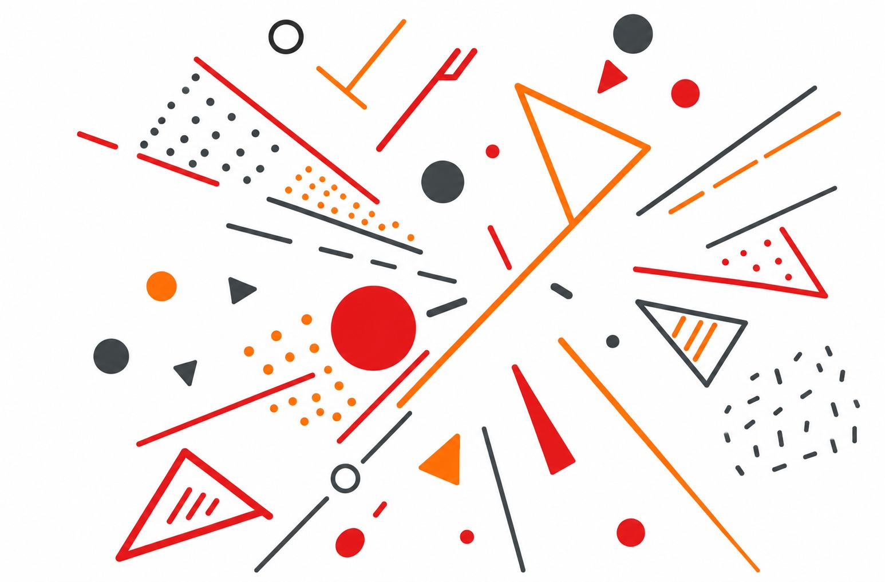

Aviso de cocina
El zumbido que nos dice que ya casi está
Ese ruido del microondas es el sonido típico de cuando uno tiene afán. Es un zumbido bajito y constante que se queda ahí de fondo mientras esperamos a que la comida se caliente. Lo mejor es cuando llega el 'bip' del final, que rompe el silencio y nos avisa que ya podemos seguir con lo nuestro. Es un sonido muy de casa que todos conocemos de memoria